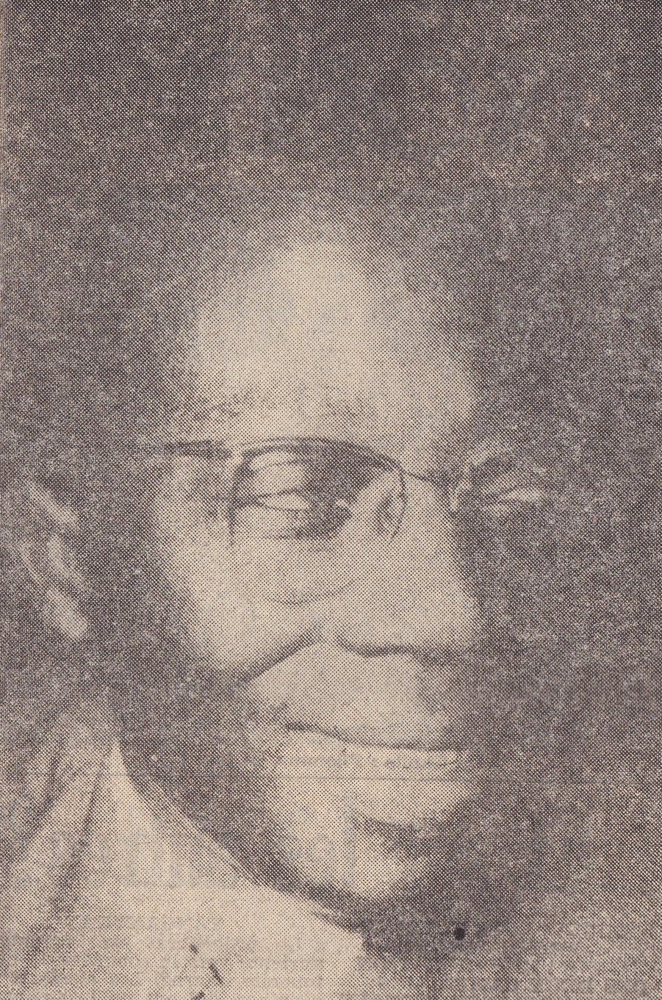
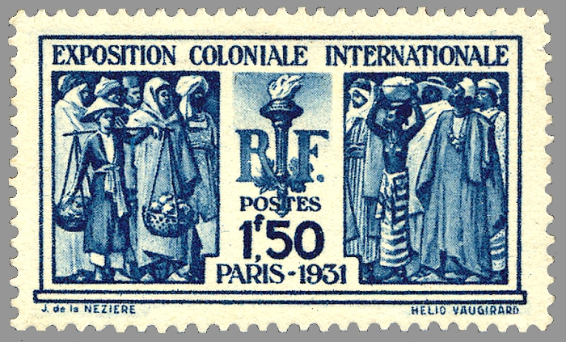
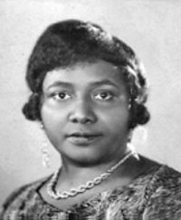
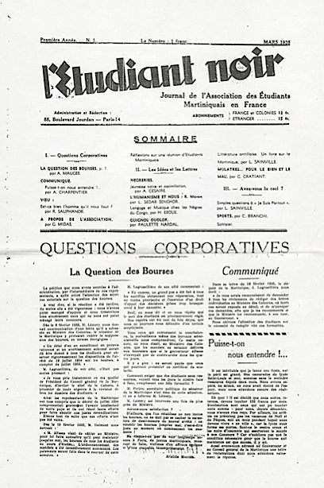
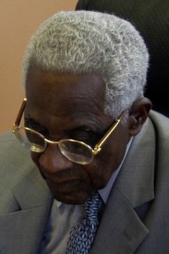
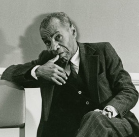

Thursday · Literature
(c. 1928–1960): Black writers in French claim a word and a world
In interwar Paris, students and writers from Martinique, Senegal, French Guiana, Haiti and Madagascar met in salons, lecture halls and little magazines and began to answer the French empire in its own language. Out of that meeting came : a word forged from an insult, a body of poetry by , and , and a debate about Black identity that ran from the ' salon in to the 1956 at the Sorbonne, and then on into the politics of decolonisation.


is usually told as the story of three young men, , and , and this capsule follows that outline because their poems are the core of the movement. But the outline leaves people out. and were writing about Black consciousness and running a salon for Black intellectuals in Paris several years before the word appeared, and complained in 1960 that their role had been forgotten. wrote some of the sharpest essays of the Martinican wartime phase. The movement's founders also disagreed with each other: 's version stressed a distinct African sensibility, while and were closer to revolt and to Marxism. The dates c. 1928–1960 are a teaching frame, running from 's essay on to the year most of French West Africa became independent. Exact dates for some events, such as the first appearance of the word, differ between sources; where they differ, this capsule follows the published record and says so.
Select any words, or tap a dotted term.
- 1928 Jane Nardal's “Internationalisme noir” In February 1928 the first issue of , a Paris newspaper for Black readers, carries 's essay “” (). She argues that Black people in Africa, the Caribbean and the United States are becoming aware of a shared condition. In October she follows it with “” (), about Paris's fascination with Black women as exotic entertainment.
- 1931 Colonial Exhibition; La Revue du monde noir From May to November 1931 the in the Bois de Vincennes presents the French empire to millions of visitors, with reconstructed temples and villages. The publish a tract urging people not to visit. In October and the Haitian scholar launch , a bilingual French and English magazine. It runs for six issues, until April 1932.
- 1932 Légitime Défense A group of Martinican students in Paris, including , and , publish a single issue of (). It combines and Marxism and attacks Caribbean poets who imitate French models. The issue causes a scandal and there is no second one.
- 1935 L'Étudiant noir The first issue of , the journal of the Association of Martinican Students in France, appears in March 1935. , and all write for it. In the May–June issue 's essay “” uses the word , the earliest printed use usually cited. Only two issues survive.
- 1937 Damas, Pigments publishes with the small Paris press of , with a preface by the poet . It is the first book of poetry. French authorities later ban it as a threat to state security.
- 1939 Cahier d'un retour au pays natal In August 1939, after a rejection elsewhere, the Paris magazine publishes 's long poem (). is already sailing home to Martinique to teach. The same year publishes his essay “” ().
- 1941 Tropiques and Breton In Martinique, under the administration, , and found the review . In April , leaving wartime France on his way to New York, finds the first issue in a shop and meets . The review continues, despite censorship, until 1945.
- 1948 Senghor's anthology and “Orphée noir” publishes the . 's preface, “” (), introduces to the wider French intellectual public and calls it an “”, a stage in a dialectic that would eventually be overcome.
- 1956 First Congress of Black Writers and Artists In September 1956 and the journal hold the at the Sorbonne. Speakers and participants include , , , , , and . Pablo Picasso designs the poster.
- 1960 Independence Senegal and most of France's sub-Saharan colonies become independent states. On 5 September 1960 is elected the first president of Senegal. , by contrast, remains mayor of and a deputy in Paris, representing an island that became a in 1946 at his own urging.
Before
An empire that taught its subjects to be French, and a Paris that wanted them exotic
To understand you have to start with the way France ruled. Britain often governed its colonies through local rulers and spoke of separate peoples developing separately. France spoke the language of : in principle, a colonial subject who learned French, studied French literature and absorbed French values could become French. In practice, very few people were offered that path, and those who took it were expected to leave the rest of themselves behind. In the old Caribbean colonies of Martinique, Guadeloupe and French Guiana, where slavery had been abolished in 1848, a Black and mixed-race middle class had grown up that took French schooling very seriously. In West Africa, a tiny educated elite was trained in mission and government schools. The brightest students from both places were sent to Paris.
The Paris they found in the 1920s was full of Black culture, but mostly on white terms. Jazz had arrived with American soldiers and musicians after the First World War. became a star in La Revue in 1925. Collectors and artists such as Picasso had been buying African masks and sculpture for two decades. This fashion for things was not the same thing as respect. It treated Black people as rhythm, instinct and decoration. The word itself, like its English equivalent, was an insult.


The of 1931 showed the official picture at its grandest. In the Bois de Vincennes, visitors could walk from a full-scale copy of the temple of Angkor Wat to model villages from West Africa. The message was that France was bringing civilisation to grateful peoples. The published a tract called “” (), and the Communist Party organised a small counter-exhibition on the truth about the colonies. For the Black students in Paris, the exhibition was a daily reminder of how they were seen.
Two other currents reached them from across the Atlantic. The first was the . Students in Paris read , whose novel (1929) is set among Black dockworkers and drifters in Marseille, and , whose poems were translated in Paris magazines. 's anthology (1925) offered the idea that Black people could define their own culture rather than wait to be described. The second current came from Haiti, the first Black republic. In (, 1928), the Haitian ethnologist told Haiti's educated class to stop being ashamed of the peasant culture, the Creole language and the Vodou religion that they had inherited from Africa. later called Haiti the place where stood up for the first time.
Many accounts of begin in 1935. A better starting point is a few years earlier, with two Martinican sisters. and came from a well-off Black family in Martinique and studied in Paris in the 1920s. In February 1928 published “” in the first issue of , a newspaper for Black readers. She argued that Black people across the world were waking up to a shared history and could form a kind of international community without giving up the cultures they had acquired. Later that year her essay “” () took apart the Parisian craze for Black women as entertainers. These are, in substance, the arguments that the better-known men would make later.
The era
From the Clamart salon to L'Étudiant noir, the Cahier and the anthology
At the end of the 1920s the began hosting a salon at the family's home in , just outside Paris. Students and writers from the Caribbean and Africa met African Americans passing through Paris, and they talked, in French and English, about race, colonialism, jazz and literature. later wrote that he and his friends were in contact with Black Americans between 1929 and 1934 through 's salon. had been one of the first Black students at the Sorbonne, where she studied English, and she translated Harlem writers for French readers.


In October 1931 and the Haitian doctor and scholar launched (). It was printed in both French and English and published poems, essays on African history and art, and news of Black life in the United States and the Caribbean. It was deliberately polite and avoided open politics, partly because it received some money from the Ministry of the Colonies. It lasted six issues. In the last one, 's essay “” () described how Caribbean students in Paris had moved from wanting to be indistinguishable from the French to taking an interest in Africa.
Some Martinican students wanted something angrier. In June 1932 , , and a few friends published (), a single issue that mixed with Marxism. It mocked Caribbean poets who wrote polite French verse about palm trees and pretty Creole women, and it accused the Caribbean middle class of imitating its oppressors. The issue caused a scandal among the students' families, and it never had a sequel, but it introduced a combination that would matter later: a poetics of revolt borrowed from , joined to an anti-colonial politics.
The three men usually named as the founders of met in this world. , born in 1913 in Basse-Pointe on the north coast of Martinique, came to Paris in 1931 on a scholarship to the , the elite school that prepared students for the . On his first day there, later recalled, he met , seven years older, born in 1906 in the coastal town of Joal in Senegal, who had come to Paris to study in 1928. , born in 1912 in Cayenne in French Guiana, had been at school with in Martinique and was studying law and ethnology in Paris. introduced to Africa as a living culture rather than a schoolbook abstraction; gave his combative energy.


In 1935 the friends turned the newsletter of the Martinican students' association into (). later described the aim: they had stopped being Martinican, Guadeloupean, Guianese, African or Malagasy students and had become one and the same Black student. In the May–June 1935 issue, published “” (), under a rubric called “Nègreries”. He rejected , the idea that the way forward was to become as French as possible, and he used the word as a term of pride. This is the earliest printed use of usually cited. The word took the insult and added the suffix -itude, as in solitude or servitude, to name a condition. later said that the word had been contested as a word before it was contested as a concept.
The first book of poetry was by . , published in 1937 by the small press of with a preface by the poet , is short, rhythmic and sarcastic. Its best-known poems are about the costume of . In “” (Sale), dedicated to , the speaker repeats that he feels ridiculous in their shoes, their dinner jacket, their shirt-front, their stiff collar, their monocle and their bowler hat. In “” (), a mother's voice keeps correcting a boy's manners and telling him not to behave like a , and the becomes the memory he cannot swallow. French authorities later banned the book as a threat to state security.
's () is the movement's masterpiece. He began it in the mid-1930s while staying with his friend Petar Guberina on the Dalmatian coast of Yugoslavia. After one magazine turned it down, the Paris review printed it in August 1939, just as was returning home to teach. The poem moves from disgust to acceptance. It opens on a Martinique of hunger, sickness and apathy, describes the speaker's shame at laughing along with others at a poor Black man on a tram, and ends with a man standing up. In its most quoted passage the speaker defines his blackness by what it is not: “my is not a stone, its deafness hurled against the clamour of the day / my is not a speck of dead water on the dead eye of the earth / my is neither a tower nor a cathedral / it plunges into the red flesh of the soil / it plunges into the burning flesh of the sky.” The poem got almost no attention in 1939. Its fame came after the war.
The Second World War split the group. , by then a teacher with a French in grammar, was drafted into a colonial infantry regiment and captured by the Germans in June 1940. He spent two years in prisoner-of-war camps, where he wrote many of the poems later published as (, 1948), until he was released on medical grounds in 1942. and his wife, , were teaching at the in , where one of their pupils was a teenager named . Martinique was governed by in the name of the , with a large garrison of sailors on the island and strict censorship.
In April 1941 the Césaires, and a few colleagues began , a review that presented itself as a cultural magazine about Martinican folklore, plants and poetry, which was the only way to get past the censors. Under that cover it published essays against colonial culture and poems. The same month, arrived in Martinique on a ship of refugees bound for the Americas, along with the painter and the anthropologist . came across the first issue of in a shop, met , and became his champion. His essay “” () became the preface to the 1947 editions of the , which made famous in Paris and New York.
After the war, became a public movement. In 1945 was elected mayor of and a deputy in the French National Assembly, with Communist support, and was elected deputy for Senegal. In 1947 the Senegalese philosopher founded the journal in Paris, which became the movement's main platform and, from 1949, a publishing house. In 1948, for the centenary of the abolition of slavery, published his (Anthology of the New Black and Malagasy Poetry in French). Its preface, by , was called “” (). praised the poets as the most revolutionary poetry of the time, but he also described as an “” and as the weak stage in a dialectic that would be overcome by a universal, class-based revolution. The preface made famous among French intellectuals and gave its critics their first line of attack.
How it showed up
Three founders, three different ideas of blackness
showed up mostly as poetry, essays and magazines, and later as speeches, conferences and government cultural policy. The three founders shared a starting point, the refusal to be ashamed of being Black, but they took it in different directions.
Aimé Césaire
1913–2008
Poet, playwright and politician from Martinique. His (1939) is the movement's central poem, and his (, 1950, revised 1955) is one of the most influential anti-colonial essays ever written. It argues that colonisation degrades the coloniser and that Nazism was colonial violence turned back on Europe. For , was the fact of being Black, the acceptance of that fact, and the taking up of a history that included the slave trade and the plantation. His later plays include (1963), about a king of post-revolutionary Haiti, and (1969), a rewriting of Shakespeare's The Tempest from Caliban's side. He was mayor of from 1945 to 2001 and left the Communist Party in 1956.
Léopold Sédar Senghor
1906–2001
Poet and statesman from Senegal. His collections (, 1945) and (, 1948) use long, chanting lines modelled partly on the praise poetry of his Serer childhood, and are meant to be read aloud with drums or the . His version of stressed a distinct African way of knowing, which he summed up in a 1939 sentence his critics never let him forget: “L'émotion est , comme la raison hellène” (Emotion is Black, as reason is Greek). He was the first president of Senegal from 1960 to 1980, governed for long periods as the head of a one-party state, and was the first African elected to the , in 1983.
Léon-Gontran Damas
1912–1978
Poet from French Guiana, of mixed African, European and Indigenous American descent. His (1937) was the first book of poetry, and it remains the most direct: short lines, repetition, jazz rhythm and open sarcasm about the manners he had been taught. He was elected a deputy for French Guiana from 1948 to 1951, edited the anthology Poètes d'expression française, and spent his last years teaching at Howard University in Washington, D.C., where he died in 1978. He is the least famous of the three today, and many readers find him the most modern.

.jpg){kind=link}
's most famous poem, “” (), from , begins “Femme nue, / Vêtue de ta couleur qui est vie, de ta forme qui est beauté” (Naked woman, , / clothed in your colour which is life, in your form which is beauty). It was a deliberate reversal of a culture that treated Black women's bodies as either ugly or comic. It is also a good example of why later readers, including feminist critics, have questioned the movement: the woman in the poem does not speak. She is a landscape and a symbol of Africa, admired by a male poet.

.jpg){kind=link}
Two women deserve a place in this section, not a footnote. 's salon and magazine created the network in which the founders met Harlem writers, and her essays described before the word existed. , born in 1915, published seven essays in between 1941 and 1945. In “” (, 1945), she described how the beauty of the Caribbean landscape hid hunger and racial humiliation from the people who admired it. In “1943: Le surréalisme et nous” she argued that could help Martinicans break out of the opposition between Black and white, African and European, savage and civilised. She stopped publishing after 1945, and her essays were only collected in English in 2012.
Around these figures was a much larger group of writers whom 's helped make visible. They included the Senegalese storyteller and poet , whose (1947) retold Wolof folktales he had heard from a ; the poet , whose (, 1956) is angrier than 's work; the Malagasy poets and ; the Guadeloupean poet ; and Haitian writers such as , whose novel (, 1944) is about peasants trying to bring water back to a drought-stricken village.
The movement's high point as a gathering was the , organised by at the Sorbonne in September 1956. Delegates from Africa, the Caribbean and the United States met in the Amphithéâtre Descartes while, outside, the Algerian war was escalating. spoke on culture and colonisation; , by then a psychiatrist working in Algeria, spoke on racism and culture. The American novelist attended, and reported on the congress in his essay “”, where he noticed how hard it was to find a common Black culture shared by a Senegalese poet, a Martinican deputy and an American from Harlem. That question, whether one blackness exists across such different histories, was the movement's deepest problem.
Same time elsewhere
Harlem, Havana, Port-au-Prince, Lisbon and Manchester
was one of several movements in the 1920s to 1950s in which Black writers rejected the image of themselves they had been given. They knew about each other, but each grew out of its own colonial or national situation.
- In the United States, the of the 1920s came first and influenced the Paris students directly through , and . The difference is that Harlem writers were demanding full citizenship in the country where they were born, while the writers were colonial subjects who were also arguing about the relationship between their islands or territories and France.
- In Cuba, the poets of or in the late 1920s and 1930s brought Afro-Cuban rhythms and speech into poetry. 's (1930) wrote poems in the form of the son, a popular Afro-Cuban song style. Some of this movement was written by white poets fascinated by Black culture, which is a difference from .
- In Haiti, after the United States occupation began in 1915, turned writers toward peasant culture, Creole and Vodou. 's (1928) was its founding book, and 's novels carried it into fiction. Haitian writers appeared in 's anthology, and attended the .
- In Portuguese Africa, students from Angola, Mozambique and Cape Verde in Lisbon in the late 1940s and 1950s, including the Angolan poet and the critic , read poetry and began writing poems about African identity. Several later led liberation movements, and became the first president of Angola in 1975.
- In the British empire, the in Manchester in October 1945 brought together , and and called for independence. Anglophone was more openly political and less literary than , and many Anglophone writers later rejected 's emphasis on race.
The comparison shows what was particular about . Because France claimed that its subjects could become French through language and education, the revolt against took the form of a revolt inside the French language. and wrote some of the most ambitious French poetry of the century while arguing that French civilisation was not the measure of all civilisations.
After
Critics, independence, and the generations that answered back
The sharpest early critic was 's own former pupil. In (, 1952), described the experience of being seen as Black on a Paris street and wrote that he had found comfort in , only to have 's “” tell him that his blackness was a passing stage in someone else's dialectic. In (, 1961) he went further. In the chapter on national culture he argued that a generalised African or Black culture was a reaction to colonial racism, which had lumped all Africans together, and that real national cultures would be made in the struggle for liberation, not by recovering a lost past.
Writers from English-speaking Africa were often impatient with the whole idea. The Nigerian playwright is remembered for a line usually quoted as “A tiger does not proclaim its ; it pounces.” His point was that confident writing does not need to announce its identity. Others criticised 's claim about emotion and reason as a mirror image of colonial racism, which had also said that Africans were emotional rather than rational.
Politically, the founders went different ways. became president of Senegal in 1960 and made something close to a state ideology. In April 1966 Dakar hosted the , with performers and writers from Africa, the Caribbean and the United States, including . Critics at home pointed out that 's government also kept close ties with France and suppressed political opponents. , who had pushed through the 1946 law that made Martinique a , broke with the French Communist Party in October 1956 with his , after the Soviet crushing of the Hungarian uprising, and founded his own Martinican Progressive Party in 1958. He never campaigned for Martinican independence.
In the Caribbean, later writers answered by moving away from Africa as the main point of reference. , also from Martinique, proposed , an identity based on the mixed, multilingual history of the Caribbean itself, set out most fully in (, 1981). In 1989 , and published (), which begins by calling themselves neither Europeans, nor Africans, nor Asians, but Creoles, and which acknowledges as a forerunner while rejecting his focus on Africa. 's novel won the Prix Goncourt in 1992.
Since the 1990s has been read again more sympathetically. Scholars such as have restored the and to the story, and the Senegalese philosopher has read as a serious philosopher of art rather than a naive believer in racial essences. 's is now taught across the world as a founding text of postcolonial thought. In the United States, the poets of the of the 1960s, who had their own slogan “Black is beautiful”, saw as an earlier version of their own project.
A question
A question to keep asking
began by taking an insult and turning it into a name to be proud of. Its critics said that this kept the movement tied to the very racial categories it was fighting. When a group reclaims a word or an identity that was used against it, does it escape the old categories, or does it confirm them? Try answering for 's , for 's “”, and for one example from your own time.
Fun fact
André Breton found Césaire's magazine while buying a ribbon
In April 1941 , the leader of the , was stuck in Martinique on his way from wartime France to New York, watched by the police. Walking around , he went into a haberdashery to buy a ribbon for his daughter and saw, among the sewing goods, the first issue of a new magazine called . The magazine was paid for and distributed by its own founders, and this shop was kept by the sister of , one of them. The town's bookshops, meanwhile, had almost nothing on their shelves. Through her met and then . later called 's “nothing less than the greatest lyrical monument of our times”, and his essay about that meeting became the preface that made the poem famous.